2 Análisis exploratorio de datos (EDA)
2.1 Análisis exploratorio de exam_score (Target)
trainset %>%
summarise(
n = length(exam_score),
media = mean(exam_score),
ds = sd(exam_score),
mediana = median(exam_score),
minimo = min(exam_score),
maximo = max(exam_score),
Q1 = quantile(exam_score, 0.25),
Q3 = quantile(exam_score, 0.75),
IQR = IQR(exam_score)
) %>%
kable()| n | media | ds | mediana | minimo | maximo | Q1 | Q3 | IQR |
|---|---|---|---|---|---|---|---|---|
| 630000 | 62.50667 | 18.91688 | 62.6 | 19.599 | 100 | 48.8 | 76.3 | 27.5 |
La variable exam_score se analizó a partir de 630.000 estudiantes, donde cada fila representa un estudiante. El puntaje promedio es de 62,51 puntos, con una desviación estándar de 18,92 puntos.
El 50% de los estudiantes obtiene un puntaje menor o igual a 62,60 puntos, prácticamente igual a la media, lo que indica una distribución simétrica. El IQR es de 27,5 puntos (entre Q1 = 48,8 y Q3 = 76,3). El puntaje mínimo es 19,60 y el máximo 100.
- Histograma de densidad de la variable:
trainset %>%
ggplot(aes(x = exam_score)) +
geom_histogram(aes(y = after_stat(density)),
binwidth = 5,
fill = "#c5b0ff",
color = "white",
alpha = 0.6) +
geom_density(color = "darkblue", linewidth = 1.2) +
coord_cartesian(xlim = c(0, 100), expand = FALSE) +
labs(title = "Distribución de la calificación del examen",
x = "Calificación del examen",
y = "Densidad") +
theme_bw()
La mayor parte de los puntajes se concentra entre 50 y 75 puntos y la forma es aproximadamente simétrica. Al final se ve un aumento en 100 porque es el puntaje máximo posible: 15.458 estudiantes (2,45%) lo alcanzan.
- Diagrama de cajas y bigotes:
trainset %>%
ggplot(aes(x = "", y = exam_score)) +
geom_boxplot(fill = "#c5b0ff", color = "darkblue",
outlier.color = "#2f0be0") +
stat_summary(fun = mean, geom = "point", shape = 20,
size = 3, color = "black") +
labs(title = "Diagrama de cajas y bigotes de la calificación del examen",
x = "",
y = "Calificación del examen") +
theme_bw()
El boxplot confirma lo visto en el histograma: la mediana (62,6) está prácticamente centrada entre Q1 (48,8) y Q3 (76,3), la media (punto negro) coincide con ella y no hay valores atípicos.
2.2 Análisis de las variables independientes (características)
- Inicialmente, analizaremos las variables numéricas.
resumen_numericas <- trainset %>%
select(where(is.numeric), -exam_score, -id) %>%
pivot_longer(
cols = everything(),
names_to = "variable",
values_to = "valor"
) %>%
group_by(variable) %>%
summarise(
n = sum(!is.na(valor)),
media = round(mean(valor, na.rm = TRUE),3),
ds = round(sd(valor, na.rm = TRUE),3),
mediana = median(valor, na.rm = TRUE),
minimo = min(valor, na.rm = TRUE),
maximo = max(valor, na.rm = TRUE),
Q1 = quantile(valor, 0.25, na.rm = TRUE),
Q3 = quantile(valor, 0.75, na.rm = TRUE),
IQR = IQR(valor, na.rm = TRUE),
.groups = "drop"
)
kable(resumen_numericas)| variable | n | media | ds | mediana | minimo | maximo | Q1 | Q3 | IQR |
|---|---|---|---|---|---|---|---|---|---|
| age | 630000 | 20.546 | 2.260 | 21.0 | 17.00 | 24.00 | 19.00 | 23.00 | 4.00 |
| class_attendance | 630000 | 71.987 | 17.430 | 72.6 | 40.60 | 99.40 | 57.00 | 87.20 | 30.20 |
| sleep_hours | 630000 | 7.073 | 1.745 | 7.1 | 4.10 | 9.90 | 5.60 | 8.60 | 3.00 |
| study_hours | 630000 | 4.002 | 2.360 | 4.0 | 0.08 | 7.91 | 1.97 | 6.05 | 4.08 |
# Boxplot de age
p1 <- trainset %>%
ggplot(aes(x = "", y = age)) +
geom_boxplot(fill = "#c5b0ff", alpha = 0.7) +
labs(title = "Edad de los estudiantes", y = "Edad", x = "") +
theme_bw() +
theme(plot.title = element_text(size = 10, face = "bold"))
# Boxplot de study_hours
p2 <- trainset %>%
ggplot(aes(x = "", y = study_hours)) +
geom_boxplot(fill = "#c5b0ff", alpha = 0.7) +
labs(title = "Horas de estudio", y = "Horas", x = "") +
theme_bw() +
theme(plot.title = element_text(size = 10, face = "bold"))
# Boxplot de class_attendance
p3 <- trainset %>%
ggplot(aes(x = "", y = class_attendance)) +
geom_boxplot(fill = "#c5b0ff", alpha = 0.7) +
labs(title = "Porcentaje de asistencia", y = "%", x = "") +
theme_bw() +
theme(plot.title = element_text(size = 10, face = "bold"))
# Boxplot de sleep_hours
p4 <- trainset %>%
ggplot(aes(x = "", y = sleep_hours)) +
geom_boxplot(fill = "#c5b0ff", alpha = 0.7) +
labs(title = "Horas de sueño", y = "Horas", x = "") +
theme_bw() +
theme(plot.title = element_text(size = 10, face = "bold"))
# Cuadrícula 2x2
(p1 + p2) / (p3 + p4)
Los boxplots muestran que las cuatro variables numéricas independientes tienen distribuciones bastante simétricas y sin valores atípicos.
age: la mayoría de los estudiantes tiene entre 19 y 23 años; el 50% tiene una edad menor o igual a 21 años.study_hours: las horas de estudio van desde casi 0 hasta cerca de 8 horas; el 50% dedica 4 horas o menos al estudio.class_attendance: la asistencia se concentra entre 57% y 87%; el 50% de los estudiantes tiene una asistencia menor o igual a 72,6%.sleep_hours: la mayoría de los estudiantes duerme entre 5,6 y 8,6 horas; el 50% duerme 7,1 horas o menos.
En las cuatro variables la media y la mediana son prácticamente iguales, lo que coincide con lo observado en la tabla resumen.
# Histograma de age
trainset %>%
ggplot(aes(x = age)) +
geom_histogram(fill = "#c5b0ff", alpha = 0.7, binwidth = 1, color = "white") +
labs(title = "Edad de los estudiantes", x = "Edad", y = "Frecuencia") +
theme_bw() +
theme(plot.title = element_text(size = 10, face = "bold"))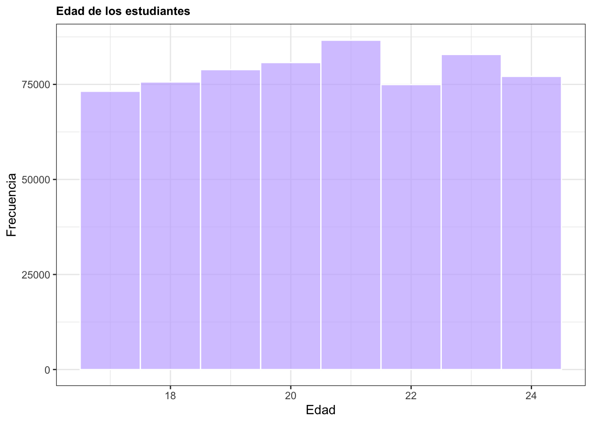
Las barras tienen una altura muy similar entre los 17 y 24 años: la edad es una variable discreta y prácticamente uniforme, sin una edad que predomine sobre las demás.
# Histograma de study_hours
trainset %>%
ggplot(aes(x = study_hours)) +
geom_histogram(fill = "#c5b0ff", alpha = 0.7, bins = 50, color = "white") +
labs(title = "Horas de estudio", x = "Horas", y = "Frecuencia") +
theme_bw() +
theme(plot.title = element_text(size = 10, face = "bold"))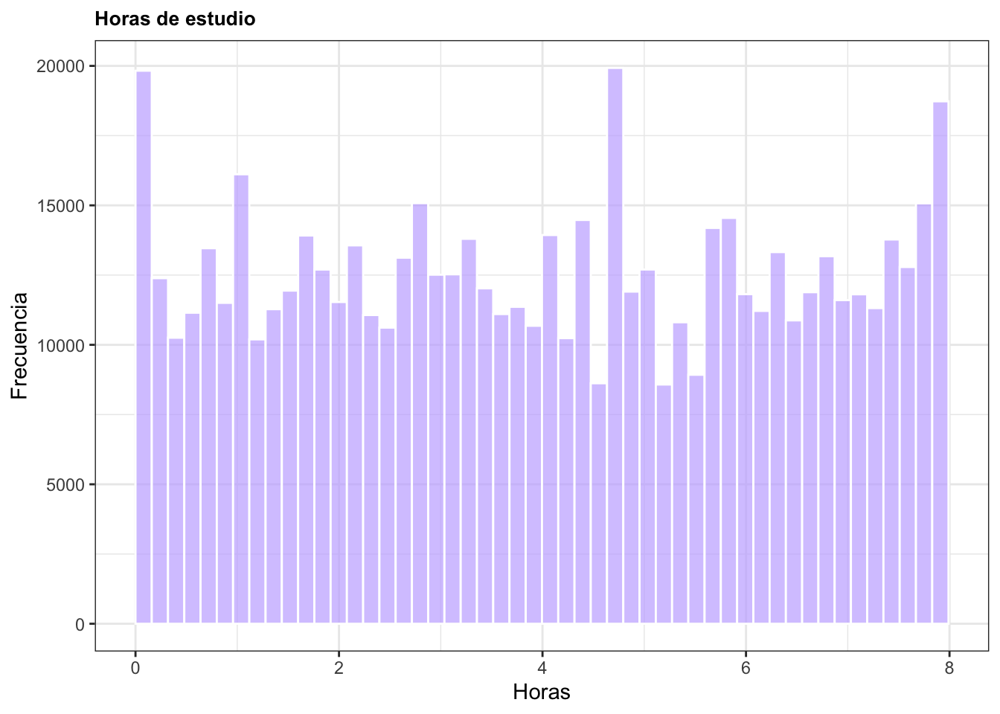
La distribución es bastante uniforme en todo el rango (0 a 8 horas), con algunas barras puntuales de mayor frecuencia. Los estudiantes se reparten de forma pareja entre quienes estudian pocas y muchas horas.
# Histograma de class_attendance
trainset %>%
ggplot(aes(x = class_attendance)) +
geom_histogram(fill = "#c5b0ff", alpha = 0.7, bins = 50, color = "white") +
labs(title = "Porcentaje de asistencia", x = "%", y = "Frecuencia") +
theme_bw() +
theme(plot.title = element_text(size = 10, face = "bold"))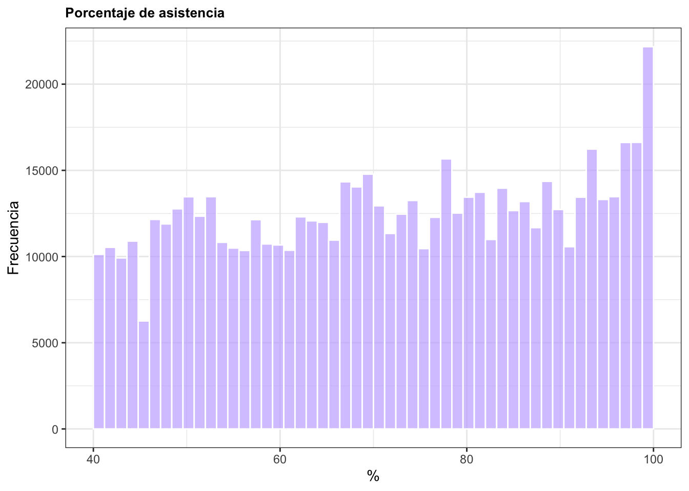
La distribución es relativamente uniforme entre 40% y 90%, con un aumento cerca del 100%: hay un grupo considerable de estudiantes con asistencia casi perfecta.
# Histograma de sleep_hours
trainset %>%
ggplot(aes(x = sleep_hours)) +
geom_histogram(fill = "#c5b0ff", alpha = 0.7, bins = 50, color = "white") +
labs(title = "Horas de sueño", x = "Horas", y = "Frecuencia") +
theme_bw() +
theme(plot.title = element_text(size = 10, face = "bold"))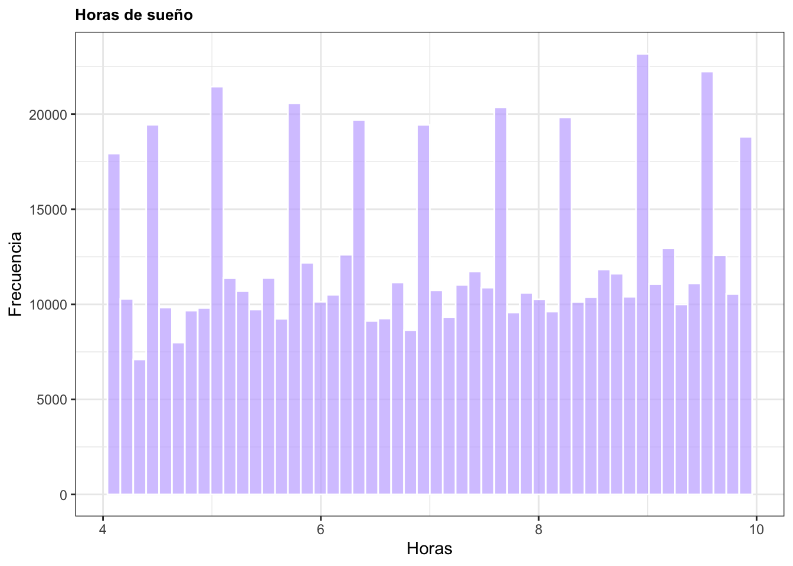
La distribución es bastante homogénea entre 4 y 10 horas, sin una concentración marcada en ningún valor.
- A continuación, trabajaremos con las variables categóricas.
tabla_study_method <- trainset %>%
count(study_method, name = "Frecuencia") %>%
mutate(
Porcentaje = round(Frecuencia / sum(Frecuencia) * 100, 2),
Variable = "study_method",
Categoria = as.character(study_method)
) %>%
select(Variable, Categoria, Frecuencia, Porcentaje)
kable(tabla_study_method)| Variable | Categoria | Frecuencia | Porcentaje |
|---|---|---|---|
| study_method | coaching | 131697 | 20.90 |
| study_method | group study | 123009 | 19.53 |
| study_method | mixed | 123086 | 19.54 |
| study_method | online videos | 121077 | 19.22 |
| study_method | self-study | 131131 | 20.81 |
tabla_study_method <- trainset %>%
count(study_method, name = "Frecuencia") %>%
mutate(
Porcentaje = round(Frecuencia / sum(Frecuencia) * 100, 1),
Etiqueta = paste0(Frecuencia, " (", Porcentaje, "%)")
)
ggplot(tabla_study_method, aes(x = reorder(study_method, -Frecuencia), y = Frecuencia)) +
geom_col(fill = "#c5b0ff", width = 0.4) +
geom_text(aes(label = Etiqueta), vjust = -0.5, size = 3.5) +
facet_wrap(~ "Distribución de la variable study_method") +
scale_y_continuous(expand = expansion(mult = c(0, 0.15))) +
labs(x = "Método de estudio", y = "Frecuencia (Porcentaje)") +
theme_bw(base_size = 12) +
theme(
plot.title = element_blank(),
strip.background = element_rect(fill = "gray80", color = NA),
strip.text = element_text(face = "bold"),
panel.grid.major.x = element_blank()
)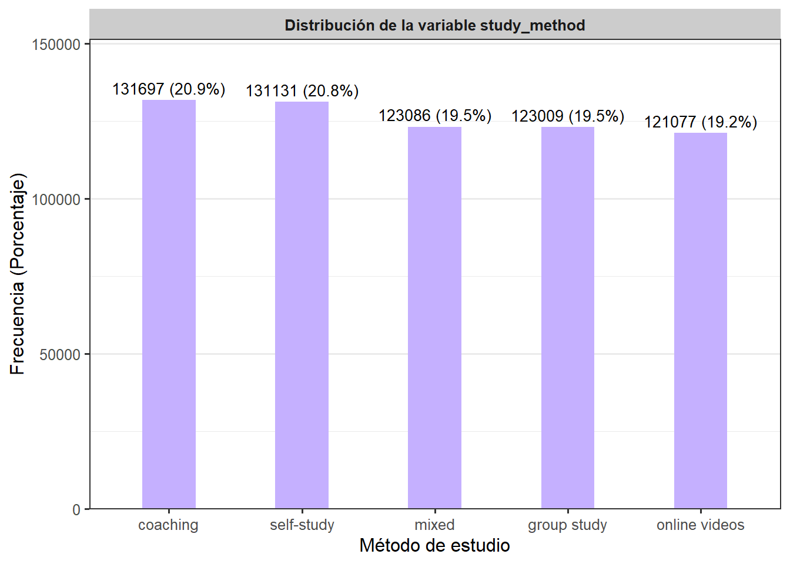
Las cinco categorías de study_method están equilibradas: coaching (20,90%) y self-study (20,81%) son las más frecuentes, seguidas de mixed (19,54%), group study (19,53%) y online videos (19,22%). Ninguna categoría domina.
tabla_gender <- trainset %>%
count(gender, name = "Frecuencia") %>%
mutate(
Porcentaje = round(Frecuencia / sum(Frecuencia) * 100, 2),
Variable = "gender",
Categoria = as.character(gender)
) %>%
select(Variable, Categoria, Frecuencia, Porcentaje)
kable(tabla_gender)| Variable | Categoria | Frecuencia | Porcentaje |
|---|---|---|---|
| gender | female | 208310 | 33.07 |
| gender | male | 210593 | 33.43 |
| gender | other | 211097 | 33.51 |
tabla_gender <- trainset %>%
count(gender, name = "Frecuencia") %>%
mutate(
Porcentaje = round(Frecuencia / sum(Frecuencia) * 100, 1),
Etiqueta = paste0(Frecuencia, " (", Porcentaje, "%)")
)
ggplot(tabla_gender, aes(x = reorder(gender, -Frecuencia), y = Frecuencia)) +
geom_col(fill = "#c5b0ff", width = 0.3) +
geom_text(aes(label = Etiqueta), vjust = -0.5, size = 3) +
facet_wrap(~ "Distribución de la variable gender") +
scale_y_continuous(expand = expansion(mult = c(0, 0.15))) +
labs(x = "Género", y = "Frecuencia (Porcentaje)") +
theme_bw(base_size = 12) +
theme(
plot.title = element_blank(),
strip.background = element_rect(fill = "gray80", color = NA),
strip.text = element_text(face = "bold"),
panel.grid.major.x = element_blank()
)
La variable gender está repartida de forma muy pareja: other (33,51%), male (33,43%) y female (33,07%).
tabla_internet_access <- trainset %>%
count(internet_access, name = "Frecuencia") %>%
mutate(
Porcentaje = round(Frecuencia / sum(Frecuencia) * 100, 2),
Variable = "internet_access",
Categoria = as.character(internet_access)
) %>%
select(Variable, Categoria, Frecuencia, Porcentaje)
kable(tabla_internet_access)| Variable | Categoria | Frecuencia | Porcentaje |
|---|---|---|---|
| internet_access | no | 50577 | 8.03 |
| internet_access | yes | 579423 | 91.97 |
tabla_internet_access <- trainset %>%
count(internet_access, name = "Frecuencia") %>%
mutate(
Porcentaje = round(Frecuencia / sum(Frecuencia) * 100, 1),
Etiqueta = paste0(Frecuencia, " (", Porcentaje, "%)")
)
ggplot(tabla_internet_access, aes(x = reorder(internet_access, -Frecuencia), y = Frecuencia)) +
geom_col(fill = "#c5b0ff", width = 0.3) +
geom_text(aes(label = Etiqueta), vjust = -0.5, size = 3.5) +
facet_wrap(~ "Distribución de la variable internet_access") +
scale_y_continuous(expand = expansion(mult = c(0, 0.6))) +
labs(x = "Acceso a internet", y = "Frecuencia (Porcentaje)") +
theme_bw(base_size = 12) +
theme(
plot.title = element_blank(),
strip.background = element_rect(fill = "gray80", color = NA),
strip.text = element_text(face = "bold"),
panel.grid.major.x = element_blank()
)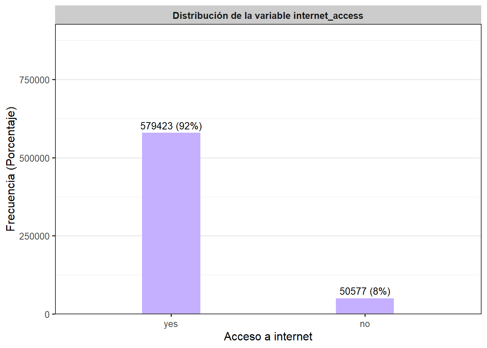
Aquí sí hay un desbalance marcado: el 91,97% de los estudiantes tiene acceso a internet (yes) y solo el 8,03% no lo tiene (no). Aun así, el grupo sin acceso tiene 50.577 estudiantes, suficientes para compararlo con el otro.
tabla_course <- trainset %>%
count(course, name = "Frecuencia") %>%
mutate(
Porcentaje = round(Frecuencia / sum(Frecuencia) * 100, 2),
Variable = "course",
Categoria = as.character(course)
) %>%
select(Variable, Categoria, Frecuencia, Porcentaje)
kable(tabla_course)| Variable | Categoria | Frecuencia | Porcentaje |
|---|---|---|---|
| course | b.com | 110932 | 17.61 |
| course | b.sc | 111554 | 17.71 |
| course | b.tech | 131236 | 20.83 |
| course | ba | 61989 | 9.84 |
| course | bba | 75644 | 12.01 |
| course | bca | 88721 | 14.08 |
| course | diploma | 49924 | 7.92 |
tabla_course <- trainset %>%
count(course, name = "Frecuencia") %>%
mutate(
Porcentaje = round(Frecuencia / sum(Frecuencia) * 100, 1),
Etiqueta = paste0(Frecuencia, " (", Porcentaje, "%)")
)
ggplot(tabla_course, aes(x = reorder(course, -Frecuencia), y = Frecuencia)) +
geom_col(fill = "#c5b0ff", width = 0.45) +
geom_text(aes(label = Etiqueta), vjust = -0.5, size = 2.8) +
facet_wrap(~ "Distribución de la variable course") +
scale_y_continuous(expand = expansion(mult = c(0, 0.15))) +
labs(x = "Curso", y = "Frecuencia (Porcentaje)") +
theme_bw(base_size = 12) +
theme(
plot.title = element_blank(),
strip.background = element_rect(fill = "gray80", color = NA),
strip.text = element_text(face = "bold"),
panel.grid.major.x = element_blank()
)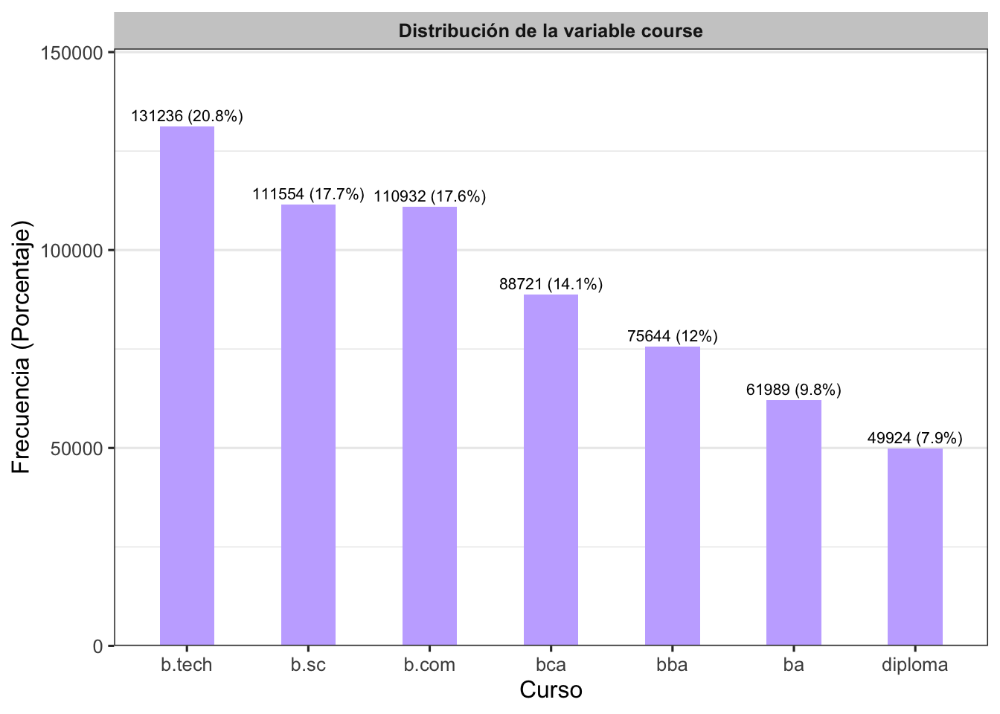
b.tech concentra la mayor proporción de estudiantes (20,83%), seguida por b.sc (17,71%) y b.com (17,61%); entre las tres suman cerca del 56%. Las menos representadas son diploma (7,92%) y ba (9,84%). El desbalance es moderado: las siete categorías van del 8% al 21%.
tabla_sleep_quality <- trainset %>%
count(sleep_quality, name = "Frecuencia") %>%
mutate(
Porcentaje = round(Frecuencia / sum(Frecuencia) * 100, 2),
Variable = "sleep_quality",
Categoria = as.character(sleep_quality)
) %>%
select(Variable, Categoria, Frecuencia, Porcentaje)
kable(tabla_sleep_quality)| Variable | Categoria | Frecuencia | Porcentaje |
|---|---|---|---|
| sleep_quality | average | 203236 | 32.26 |
| sleep_quality | good | 213089 | 33.82 |
| sleep_quality | poor | 213675 | 33.92 |
tabla_sleep_quality <- trainset %>%
count(sleep_quality, name = "Frecuencia") %>%
mutate(
Porcentaje = round(Frecuencia / sum(Frecuencia) * 100, 1),
Etiqueta = paste0(Frecuencia, " (", Porcentaje, "%)")
)
ggplot(tabla_sleep_quality, aes(x = reorder(sleep_quality, -Frecuencia), y = Frecuencia)) +
geom_col(fill = "#c5b0ff", width = 0.3) +
geom_text(aes(label = Etiqueta), vjust = -0.5, size = 3.5) +
facet_wrap(~ "Distribución de la variable sleep_quality") +
scale_y_continuous(expand = expansion(mult = c(0, 0.15))) +
labs(x = "Calidad del sueño", y = "Frecuencia (Porcentaje)") +
theme_bw(base_size = 12) +
theme(
plot.title = element_blank(),
strip.background = element_rect(fill = "gray80", color = NA),
strip.text = element_text(face = "bold"),
panel.grid.major.x = element_blank()
)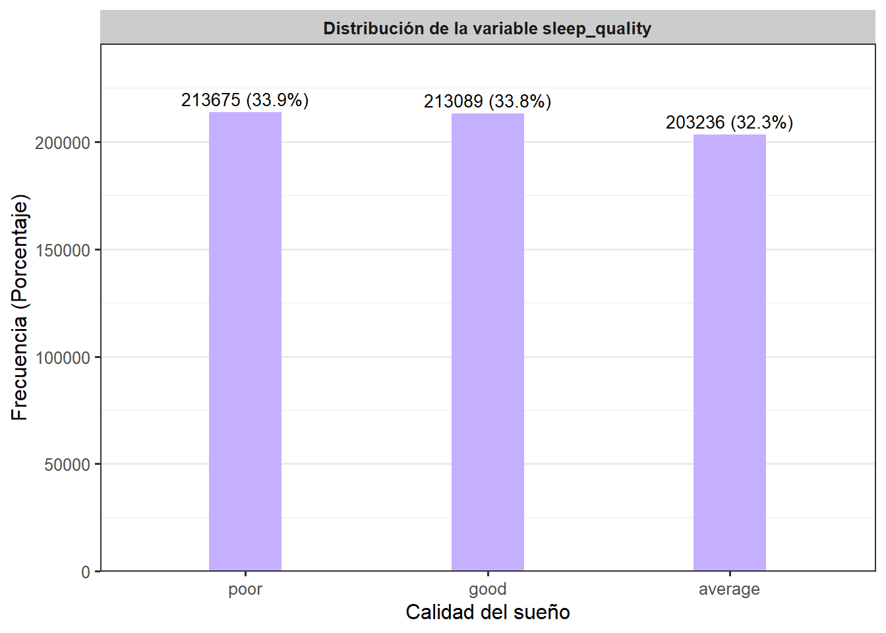
Las tres categorías de sleep_quality tienen proporciones casi iguales: poor (33,92%), good (33,82%) y average (32,26%).
tabla_facility_rating <- trainset %>%
count(facility_rating, name = "Frecuencia") %>%
mutate(
Porcentaje = round(Frecuencia / sum(Frecuencia) * 100, 2),
Variable = "facility_rating",
Categoria = as.character(facility_rating)
) %>%
select(Variable, Categoria, Frecuencia, Porcentaje)
kable(tabla_facility_rating)| Variable | Categoria | Frecuencia | Porcentaje |
|---|---|---|---|
| facility_rating | high | 203540 | 32.31 |
| facility_rating | low | 212378 | 33.71 |
| facility_rating | medium | 214082 | 33.98 |
tabla_facility_rating <- trainset %>%
count(facility_rating, name = "Frecuencia") %>%
mutate(
Porcentaje = round(Frecuencia / sum(Frecuencia) * 100, 1),
Etiqueta = paste0(Frecuencia, " (", Porcentaje, "%)")
)
ggplot(tabla_facility_rating, aes(x = reorder(facility_rating, -Frecuencia), y = Frecuencia)) +
geom_col(fill = "#c5b0ff", width = 0.3) +
geom_text(aes(label = Etiqueta), vjust = -0.5, size = 3.5) +
facet_wrap(~ "Distribución de la variable facility_rating") +
scale_y_continuous(expand = expansion(mult = c(0, 0.15))) +
labs(x = "Calificación de instalaciones", y = "Frecuencia (Porcentaje)") +
theme_bw(base_size = 12) +
theme(
plot.title = element_blank(),
strip.background = element_rect(fill = "gray80", color = NA),
strip.text = element_text(face = "bold"),
panel.grid.major.x = element_blank()
)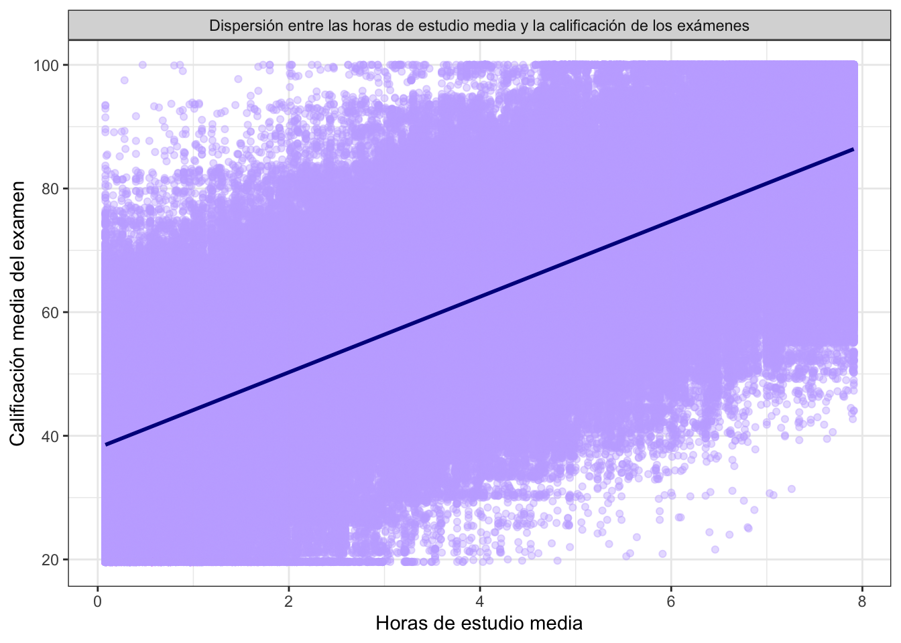
Igual que sleep_quality, las tres categorías de facility_rating están equilibradas: medium (33,98%), low (33,71%) y high (32,31%).
tabla_exam_difficulty <- trainset %>%
count(exam_difficulty, name = "Frecuencia") %>%
mutate(
Porcentaje = round(Frecuencia / sum(Frecuencia) * 100, 2),
Variable = "exam_difficulty",
Categoria = as.character(exam_difficulty)
) %>%
select(Variable, Categoria, Frecuencia, Porcentaje)
kable(tabla_exam_difficulty)| Variable | Categoria | Frecuencia | Porcentaje |
|---|---|---|---|
| exam_difficulty | easy | 176540 | 28.02 |
| exam_difficulty | hard | 99478 | 15.79 |
| exam_difficulty | moderate | 353982 | 56.19 |
tabla_exam_difficulty <- trainset %>%
count(exam_difficulty, name = "Frecuencia") %>%
mutate(
Porcentaje = round(Frecuencia / sum(Frecuencia) * 100, 1),
Etiqueta = paste0(Frecuencia, " (", Porcentaje, "%)")
)
ggplot(tabla_exam_difficulty, aes(x = reorder(exam_difficulty, -Frecuencia), y = Frecuencia)) +
geom_col(fill = "#c5b0ff", width = 0.3) +
geom_text(aes(label = Etiqueta), vjust = -0.5, size = 3.5) +
facet_wrap(~ "Distribución de la variable exam_difficulty") +
scale_y_continuous(expand = expansion(mult = c(0, 0.15))) +
labs(x = "Dificultad del examen", y = "Frecuencia (Porcentaje)") +
theme_bw(base_size = 12) +
theme(
plot.title = element_blank(),
strip.background = element_rect(fill = "gray80", color = NA),
strip.text = element_text(face = "bold"),
panel.grid.major.x = element_blank()
)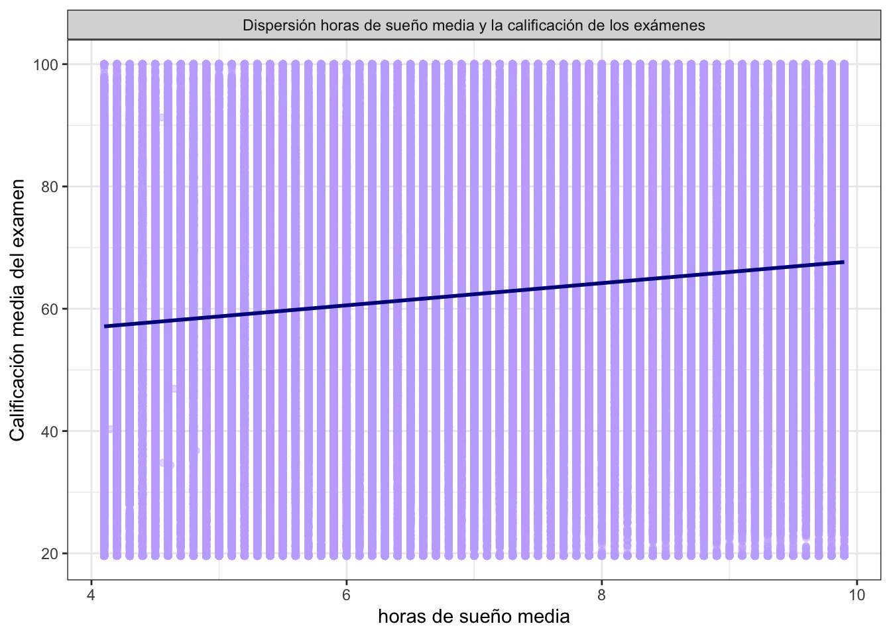
Es la variable categórica con mayor desbalance después de internet_access: moderate concentra el 56,19% de las observaciones, easy el 28,02% y hard el 15,79%.
2.3 Análisis exploratorio bivariado
- A continuación, analizaremos la relación entre la variable objetivo
exam_scorey las variables numéricas independientes.
age vs exam_score
trainset %>%
ggplot(aes(x = age, y = exam_score)) +
geom_point(alpha = 0.4, color = "#c5b0ff") +
labs(x = "Edad", y = "Calificación del examen") +
theme_bw() +
facet_grid(. ~ "Dispersión entre la edad y la calificación del examen")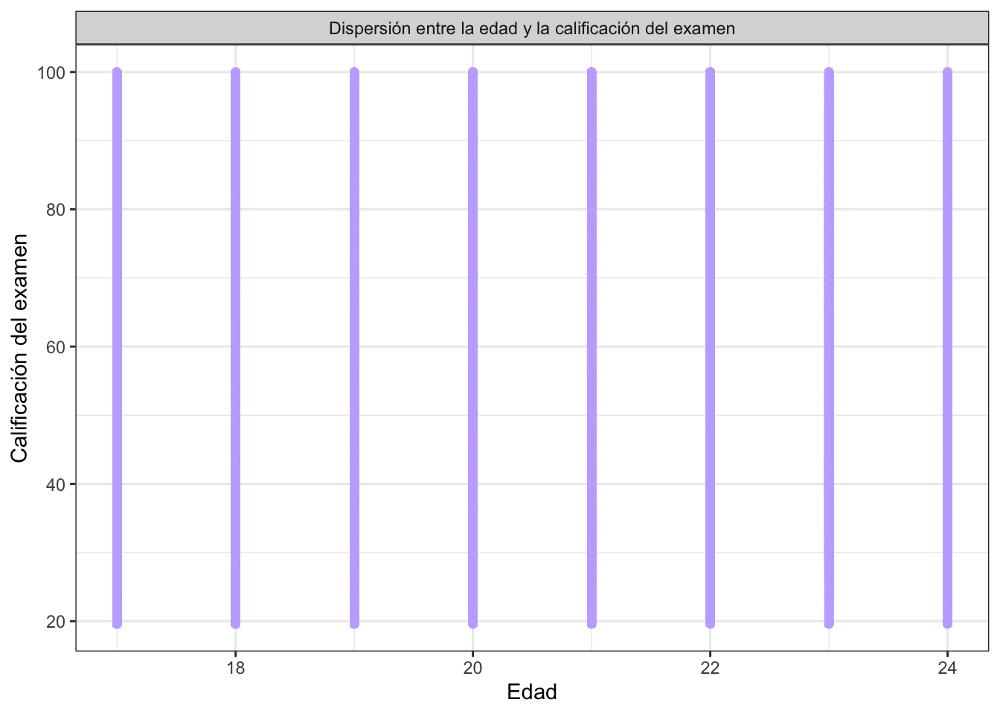
La calificación se distribuye igual en todas las edades (17 a 24 años), con puntos en todo el rango de 20 a 100: no se ve una relación lineal entre la edad y la nota.
study_hours vs exam_score
trainset %>%
ggplot(aes(x = study_hours, y = exam_score)) +
geom_point(alpha = 0.4, color = "#c5b0ff") +
labs(x = "Horas de estudio", y = "Calificación del examen") +
theme_bw() +
facet_grid(. ~ "Dispersión entre las horas de estudio y la calificación del examen")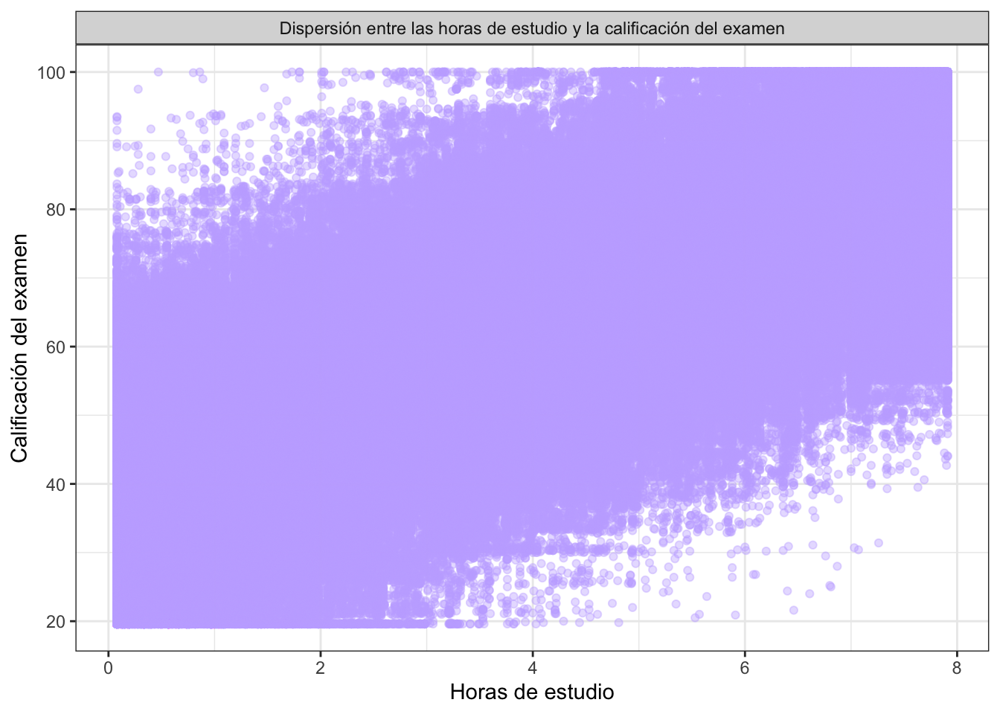
Hay una relación positiva clara: a más horas de estudio, mayor calificación. La nube de puntos sube de izquierda a derecha y es la relación más marcada de las cuatro.
class_attendance vs exam_score
trainset %>%
ggplot(aes(x = class_attendance, y = exam_score)) +
geom_point(alpha = 0.4, color = "#c5b0ff") +
labs(x = "Asistencia a clases (%)", y = "Calificación del examen") +
theme_bw() +
facet_grid(. ~ "Dispersión entre la asistencia a clases y la calificación del examen")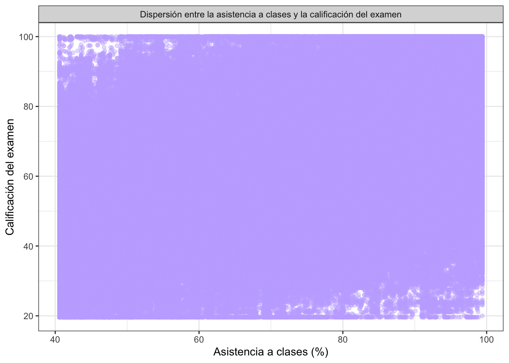
Los estudiantes con mayor asistencia tienden a sacar mejor nota. Sin embargo, la nube de puntos cubre todo el rango de calificaciones para cualquier nivel de asistencia, así que la relación es más débil que con study_hours.
sleep_hours vs exam_score
trainset %>%
ggplot(aes(x = sleep_hours, y = exam_score)) +
geom_point(alpha = 0.4, color = "#c5b0ff") +
labs(x = "Horas de sueño", y = "Calificación del examen") +
theme_bw() +
facet_grid(. ~ "Dispersión entre las horas de sueño y la calificación del examen")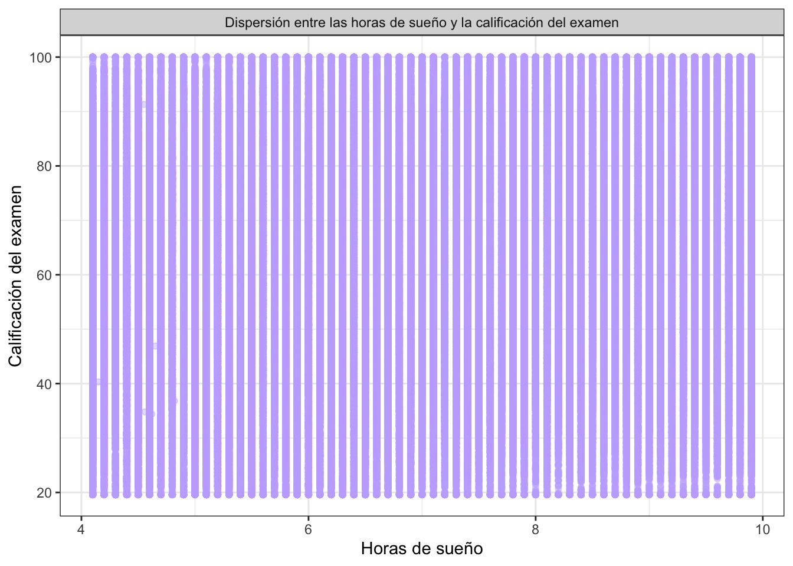
Los puntos cubren todo el rango de calificaciones para cualquier cantidad de horas de sueño. Si hay relación con la nota, es débil.
- Ahora analizaremos la relación entre
exam_scorey las variables categóricas independientes.
gender vs exam_score
trainset %>%
ggplot(aes(x = gender, y = exam_score)) +
geom_boxplot(fill = "#c5b0ff", alpha = 0.7) +
stat_summary(fun = mean, geom = "point", shape = 20, size = 3, color = "black") +
labs(title = "Calificación del examen según gender",
x = "Género", y = "Calificación del examen") +
theme_bw()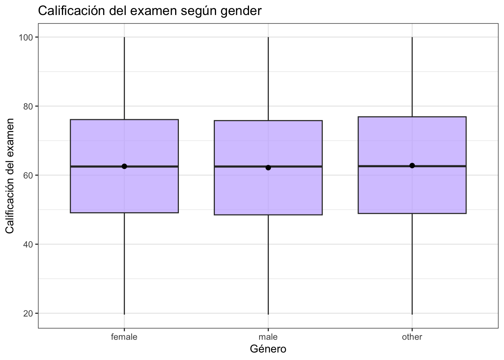
trainset %>%
group_by(gender) %>%
summarise(n = length(exam_score),
media = mean(exam_score),
ds = sd(exam_score),
mediana = median(exam_score),
minimo = min(exam_score),
maximo = max(exam_score),
Q1 = quantile(exam_score, 0.25),
Q3 = quantile(exam_score, 0.75),
IQR = IQR(exam_score)) %>%
kable()| gender | n | media | ds | mediana | minimo | maximo | Q1 | Q3 | IQR |
|---|---|---|---|---|---|---|---|---|---|
| female | 208310 | 62.56322 | 18.89111 | 62.5 | 19.599 | 100 | 49.1 | 76.1 | 27.0 |
| male | 210593 | 62.17556 | 18.76555 | 62.5 | 19.599 | 100 | 48.5 | 75.8 | 27.3 |
| other | 211097 | 62.78119 | 19.08702 | 62.6 | 19.599 | 100 | 48.9 | 76.9 | 28.0 |
Las tres cajas se superponen casi por completo. Las medias van de 62,2 a 62,8 y las medianas de 62,5 a 62,6: el género no marca diferencias en el desempeño.
internet_access vs exam_score
trainset %>%
ggplot(aes(x = internet_access, y = exam_score)) +
geom_boxplot(fill = "#c5b0ff", alpha = 0.7) +
stat_summary(fun = mean, geom = "point", shape = 20, size = 3, color = "black") +
labs(title = "Calificación del examen según internet_access",
x = "Acceso a internet", y = "Calificación del examen") +
theme_bw()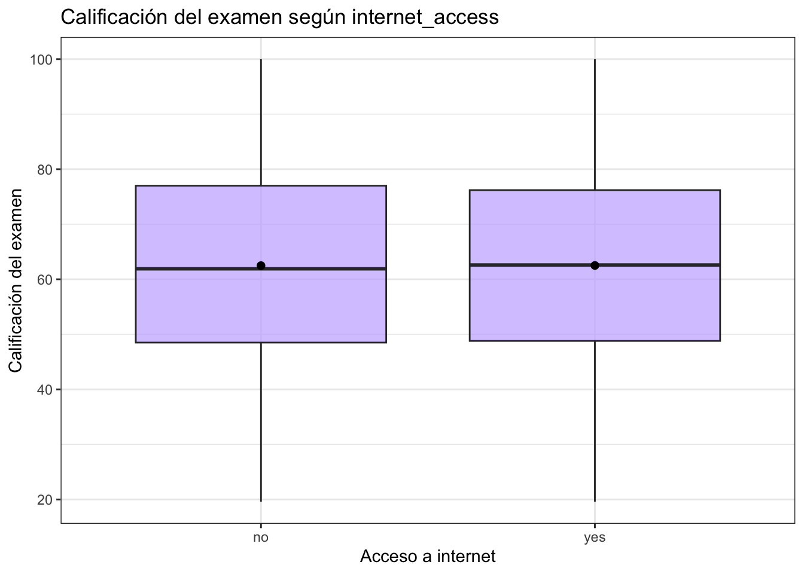
trainset %>%
group_by(internet_access) %>%
summarise(n = length(exam_score),
media = mean(exam_score),
ds = sd(exam_score),
mediana = median(exam_score),
minimo = min(exam_score),
maximo = max(exam_score),
Q1 = quantile(exam_score, 0.25),
Q3 = quantile(exam_score, 0.75),
IQR = IQR(exam_score)) %>%
kable()| internet_access | n | media | ds | mediana | minimo | maximo | Q1 | Q3 | IQR |
|---|---|---|---|---|---|---|---|---|---|
| no | 50577 | 62.47804 | 19.27782 | 61.9 | 19.599 | 100 | 48.5 | 77.0 | 28.5 |
| yes | 579423 | 62.50917 | 18.88507 | 62.6 | 19.599 | 100 | 48.8 | 76.2 | 27.4 |
La mediana es 61,9 en el grupo sin internet y 62,6 en el grupo con internet, y las medias son iguales (62,5). Las cajas se solapan casi por completo.
course vs exam_score
trainset %>%
ggplot(aes(x = course, y = exam_score)) +
geom_boxplot(fill = "#c5b0ff", alpha = 0.7) +
stat_summary(fun = mean, geom = "point", shape = 20, size = 3, color = "black") +
labs(title = "Calificación del examen según course",
x = "Curso", y = "Calificación del examen") +
theme_bw() +
theme(axis.text.x = element_text(angle = 30, hjust = 1))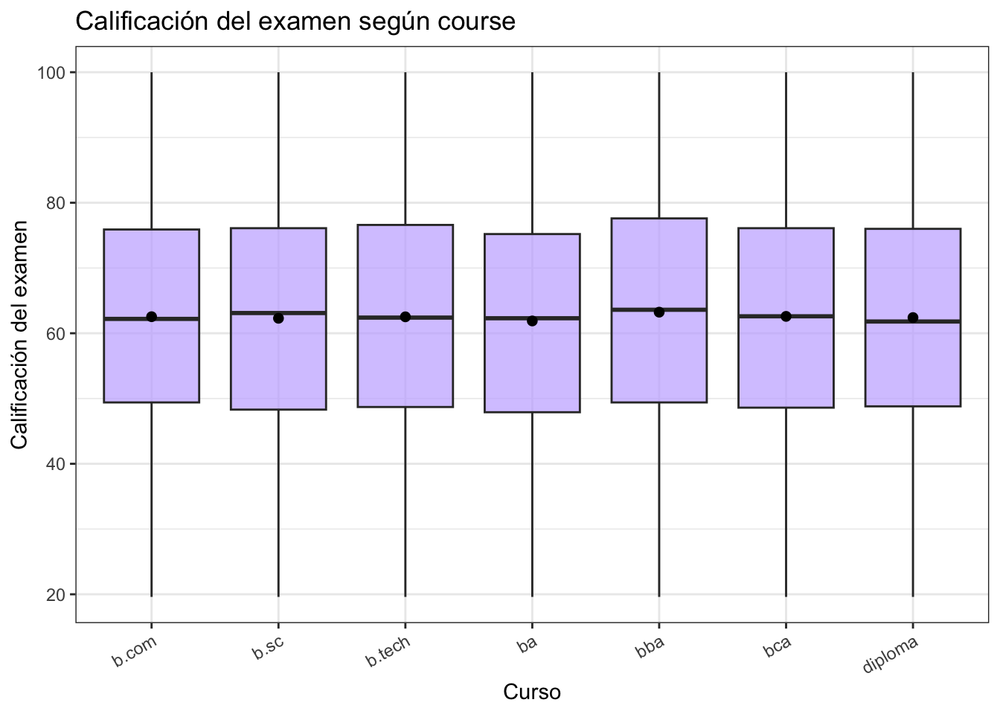
trainset %>%
group_by(course) %>%
summarise(n = length(exam_score),
media = mean(exam_score),
ds = sd(exam_score),
mediana = median(exam_score),
minimo = min(exam_score),
maximo = max(exam_score),
Q1 = quantile(exam_score, 0.25),
Q3 = quantile(exam_score, 0.75),
IQR = IQR(exam_score)) %>%
kable()| course | n | media | ds | mediana | minimo | maximo | Q1 | Q3 | IQR |
|---|---|---|---|---|---|---|---|---|---|
| b.com | 110932 | 62.53773 | 18.40494 | 62.2 | 19.599 | 100 | 49.4 | 75.9 | 26.5 |
| b.sc | 111554 | 62.29549 | 19.29724 | 63.1 | 19.599 | 100 | 48.3 | 76.1 | 27.8 |
| b.tech | 131236 | 62.51971 | 18.86238 | 62.4 | 19.599 | 100 | 48.7 | 76.6 | 27.9 |
| ba | 61989 | 61.88693 | 18.76594 | 62.3 | 19.599 | 100 | 47.9 | 75.2 | 27.3 |
| bba | 75644 | 63.23204 | 19.15946 | 63.6 | 19.599 | 100 | 49.4 | 77.6 | 28.2 |
| bca | 88721 | 62.58623 | 18.92184 | 62.6 | 19.599 | 100 | 48.6 | 76.1 | 27.5 |
| diploma | 49924 | 62.40435 | 19.09499 | 61.8 | 19.599 | 100 | 48.8 | 76.0 | 27.2 |
Las medianas van de 61,8 (diploma) a 63,6 (bba), un rango de 1,8 puntos entre los siete cursos. Ningún programa académico se distingue del resto.
sleep_quality vs exam_score
trainset %>%
ggplot(aes(x = sleep_quality, y = exam_score)) +
geom_boxplot(fill = "#c5b0ff", alpha = 0.7) +
stat_summary(fun = mean, geom = "point", shape = 20, size = 3, color = "black") +
labs(title = "Calificación del examen según sleep_quality",
x = "Calidad del sueño", y = "Calificación del examen") +
theme_bw()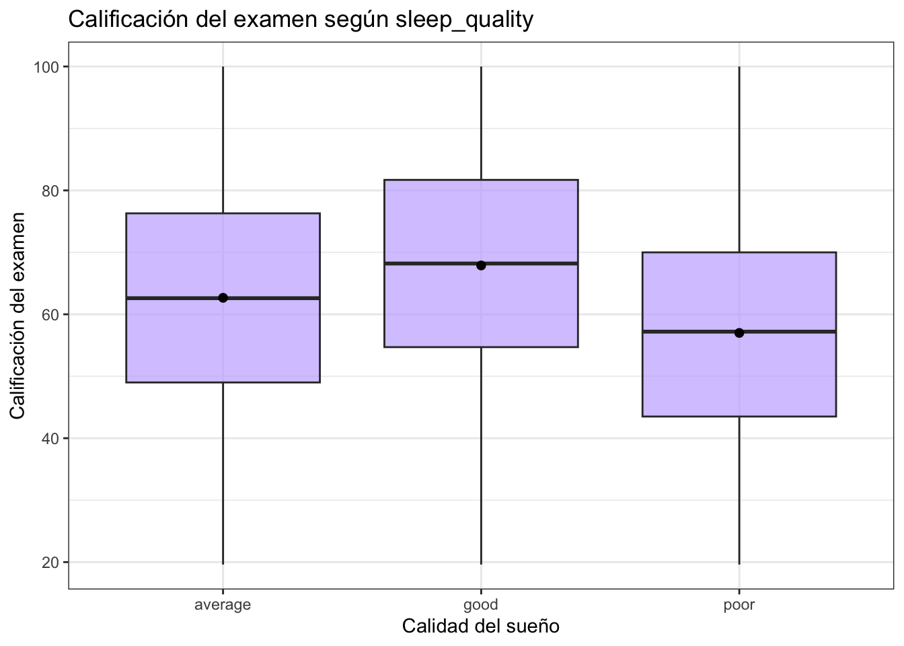
trainset %>%
group_by(sleep_quality) %>%
summarise(n = length(exam_score),
media = mean(exam_score),
ds = sd(exam_score),
mediana = median(exam_score),
minimo = min(exam_score),
maximo = max(exam_score),
Q1 = quantile(exam_score, 0.25),
Q3 = quantile(exam_score, 0.75),
IQR = IQR(exam_score)) %>%
kable()| sleep_quality | n | media | ds | mediana | minimo | maximo | Q1 | Q3 | IQR |
|---|---|---|---|---|---|---|---|---|---|
| average | 203236 | 62.66200 | 18.60137 | 62.6 | 19.599 | 100 | 49.0 | 76.3 | 27.3 |
| good | 213089 | 67.88489 | 18.11735 | 68.2 | 19.599 | 100 | 54.7 | 81.7 | 27.0 |
| poor | 213675 | 56.99547 | 18.42275 | 57.2 | 19.599 | 100 | 43.5 | 70.0 | 26.5 |
Aquí sí hay diferencias: la mediana es 57,2 en poor, 62,6 en average y 68,2 en good, 11 puntos entre los extremos. A mejor calidad de sueño, mejor nota.
facility_rating vs exam_score
trainset %>%
ggplot(aes(x = facility_rating, y = exam_score)) +
geom_boxplot(fill = "#c5b0ff", alpha = 0.7) +
stat_summary(fun = mean, geom = "point", shape = 20, size = 3, color = "black") +
labs(title = "Calificación del examen según facility_rating",
x = "Calificación de instalaciones", y = "Calificación del examen") +
theme_bw()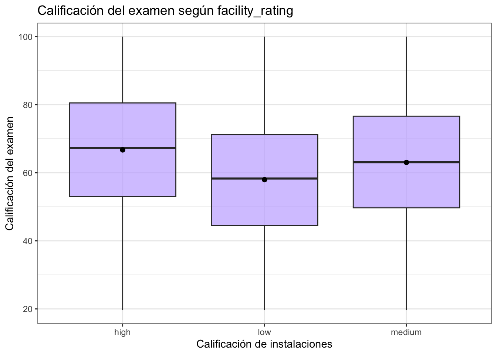
trainset %>%
group_by(facility_rating) %>%
summarise(n = length(exam_score),
media = mean(exam_score),
ds = sd(exam_score),
mediana = median(exam_score),
minimo = min(exam_score),
maximo = max(exam_score),
Q1 = quantile(exam_score, 0.25),
Q3 = quantile(exam_score, 0.75),
IQR = IQR(exam_score)) %>%
kable()| facility_rating | n | media | ds | mediana | minimo | maximo | Q1 | Q3 | IQR |
|---|---|---|---|---|---|---|---|---|---|
| high | 203540 | 66.70713 | 18.52591 | 67.3 | 19.599 | 100 | 53.0 | 80.5 | 27.5 |
| low | 212378 | 57.95455 | 18.56334 | 58.3 | 19.599 | 100 | 44.5 | 71.2 | 26.7 |
| medium | 214082 | 63.02895 | 18.63627 | 63.1 | 19.599 | 100 | 49.7 | 76.6 | 26.9 |
La mediana es 58,3 en low, 63,1 en medium y 67,3 en high, unos 9 puntos entre los extremos. Las cajas se desplazan hacia arriba a medida que mejora la calificación de las instalaciones.
exam_difficulty vs exam_score
trainset %>%
ggplot(aes(x = exam_difficulty, y = exam_score)) +
geom_boxplot(fill = "#c5b0ff", alpha = 0.7) +
stat_summary(fun = mean, geom = "point", shape = 20, size = 3, color = "black") +
labs(title = "Calificación del examen según exam_difficulty",
x = "Dificultad del examen", y = "Calificación del examen") +
theme_bw()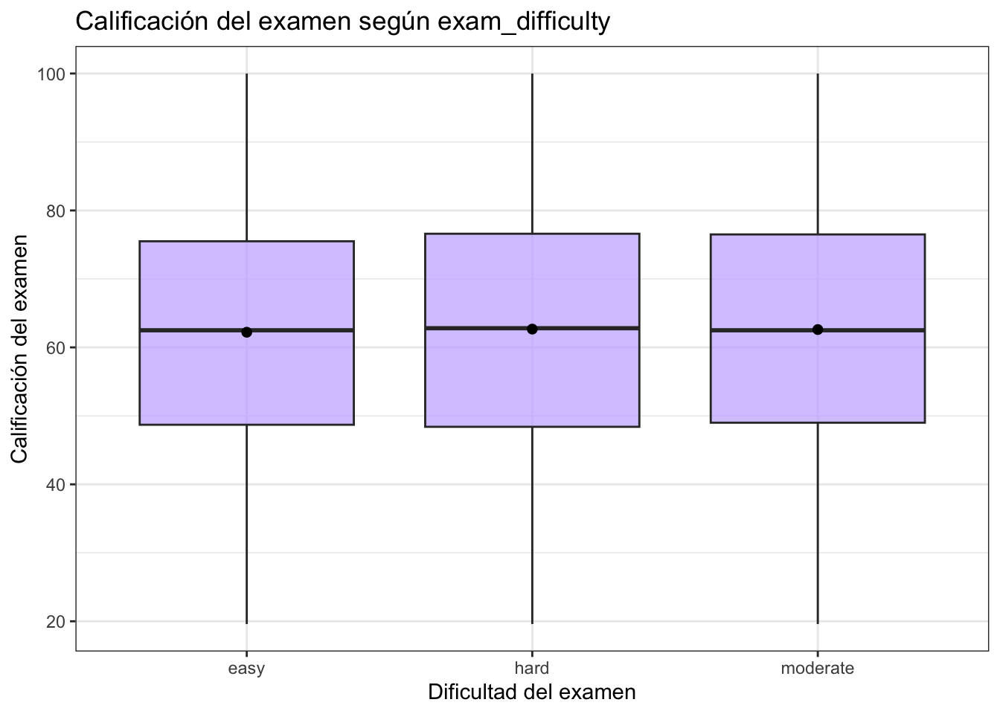
trainset %>%
group_by(exam_difficulty) %>%
summarise(n = length(exam_score),
media = mean(exam_score),
ds = sd(exam_score),
mediana = median(exam_score),
minimo = min(exam_score),
maximo = max(exam_score),
Q1 = quantile(exam_score, 0.25),
Q3 = quantile(exam_score, 0.75),
IQR = IQR(exam_score)) %>%
kable()| exam_difficulty | n | media | ds | mediana | minimo | maximo | Q1 | Q3 | IQR |
|---|---|---|---|---|---|---|---|---|---|
| easy | 176540 | 62.21440 | 18.70877 | 62.5 | 19.599 | 100 | 48.7 | 75.5 | 26.8 |
| hard | 99478 | 62.67169 | 19.13624 | 62.8 | 19.599 | 100 | 48.4 | 76.6 | 28.2 |
| moderate | 353982 | 62.60606 | 18.95653 | 62.5 | 19.599 | 100 | 49.0 | 76.5 | 27.5 |
Las medianas son casi iguales en las tres categorías (62,5 a 62,8) y las cajas prácticamente coinciden: la dificultad percibida del examen no genera diferencias en la nota.
study_method vs exam_score
trainset %>%
ggplot(aes(x = study_method, y = exam_score)) +
geom_boxplot(fill = "#c5b0ff", alpha = 0.7) +
stat_summary(fun = mean, geom = "point", shape = 20, size = 3, color = "black") +
labs(title = "Calificación del examen según study_method",
x = "Método de estudio", y = "Calificación del examen") +
theme_bw() +
theme(axis.text.x = element_text(angle = 30, hjust = 1))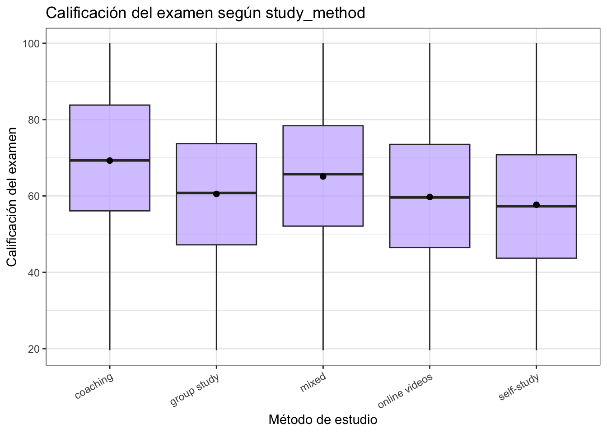
trainset %>%
group_by(study_method) %>%
summarise(n = length(exam_score),
media = mean(exam_score),
ds = sd(exam_score),
mediana = median(exam_score),
minimo = min(exam_score),
maximo = max(exam_score),
Q1 = quantile(exam_score, 0.25),
Q3 = quantile(exam_score, 0.75),
IQR = IQR(exam_score)) %>%
kable()| study_method | n | media | ds | mediana | minimo | maximo | Q1 | Q3 | IQR |
|---|---|---|---|---|---|---|---|---|---|
| coaching | 131697 | 69.26667 | 18.44609 | 69.3 | 19.599 | 100 | 56.1 | 83.8 | 27.7 |
| group study | 123009 | 60.53184 | 18.21992 | 60.8 | 19.599 | 100 | 47.2 | 73.7 | 26.5 |
| mixed | 123086 | 65.10174 | 18.21803 | 65.7 | 19.599 | 100 | 52.1 | 78.4 | 26.3 |
| online videos | 121077 | 59.72761 | 18.72935 | 59.6 | 19.599 | 100 | 46.5 | 73.5 | 27.0 |
| self-study | 131131 | 57.70015 | 18.56273 | 57.3 | 19.599 | 100 | 43.7 | 70.8 | 27.1 |
Es la variable con mayor diferencia entre grupos: la mediana va de 57,3 en self-study a 69,3 en coaching, 12 puntos. Coaching y mixed quedan por encima de group study, online videos y self-study.
En las siete variables la desviación estándar de exam_score es muy parecida entre grupos (entre 18,1 y 19,3 puntos), es decir, la dispersión de la nota casi no cambia de un grupo a otro.
- Por último, veamos cómo se relacionan entre sí las variables numéricas independientes.
age vs study_hours
trainset %>%
ggplot(aes(x = age, y = study_hours)) +
geom_point(alpha = 0.4, color = "#c5b0ff") +
labs(x = "Edad", y = "Horas de estudio") +
theme_bw() +
facet_grid(. ~ "Dispersión entre la edad y las horas de estudio")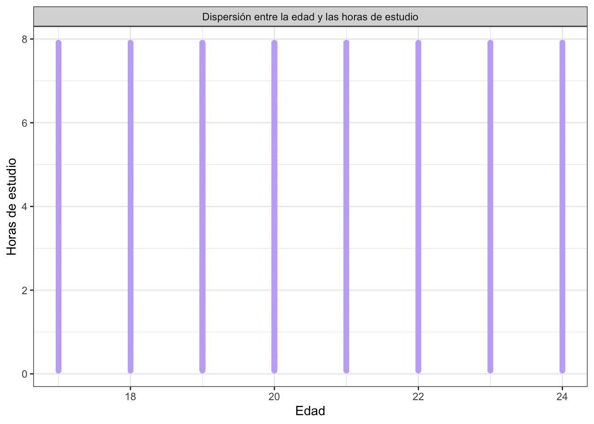
La nube de puntos cubre todo el rango de ambas variables: la edad no se relaciona con las horas de estudio.
age vs class_attendance
trainset %>%
ggplot(aes(x = age, y = class_attendance)) +
geom_point(alpha = 0.4, color = "#c5b0ff") +
labs(x = "Edad", y = "Asistencia a clases (%)") +
theme_bw() +
facet_grid(. ~ "Dispersión entre la edad y la asistencia a clases")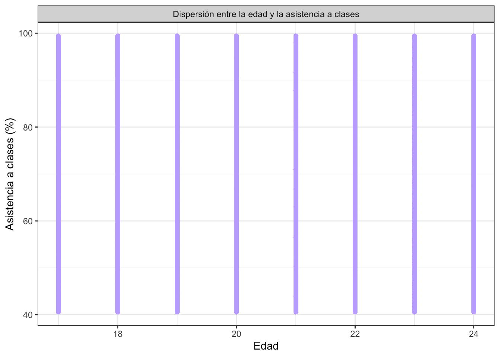
La asistencia se comporta igual entre los 17 y los 24 años.
age vs sleep_hours
trainset %>%
ggplot(aes(x = age, y = sleep_hours)) +
geom_point(alpha = 0.4, color = "#c5b0ff") +
labs(x = "Edad", y = "Horas de sueño") +
theme_bw() +
facet_grid(. ~ "Dispersión entre la edad y las horas de sueño")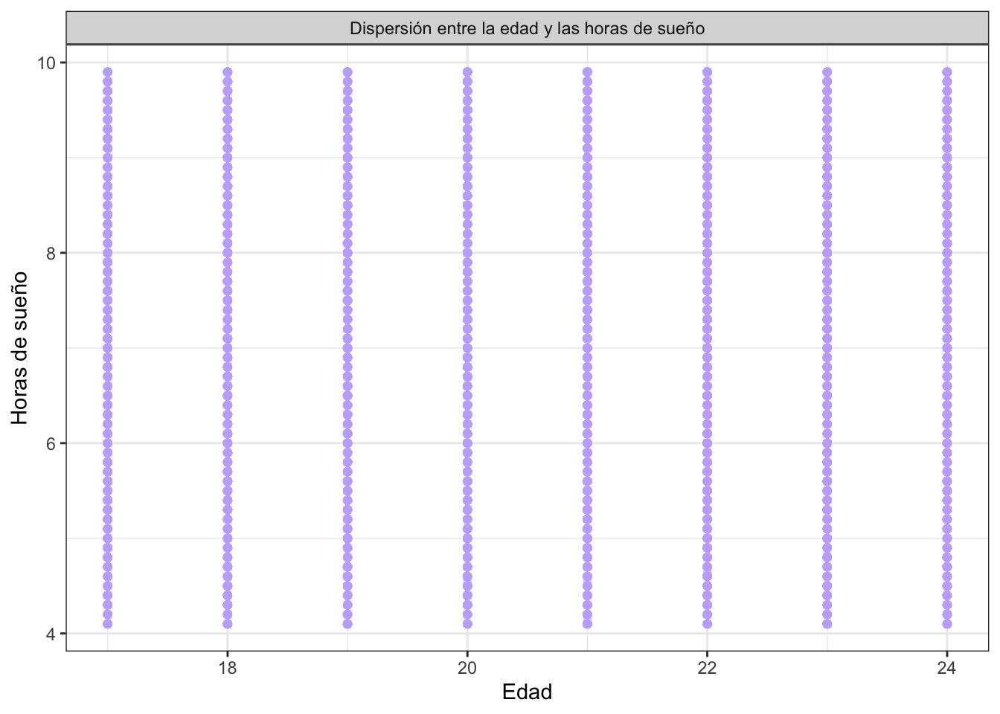
Los puntos se distribuyen de forma uniforme sin importar la edad.
study_hours vs class_attendance
trainset %>%
ggplot(aes(x = study_hours, y = class_attendance)) +
geom_point(alpha = 0.4, color = "#c5b0ff") +
labs(x = "Horas de estudio", y = "Asistencia a clases (%)") +
theme_bw() +
facet_grid(. ~ "Dispersión entre las horas de estudio y la asistencia a clases")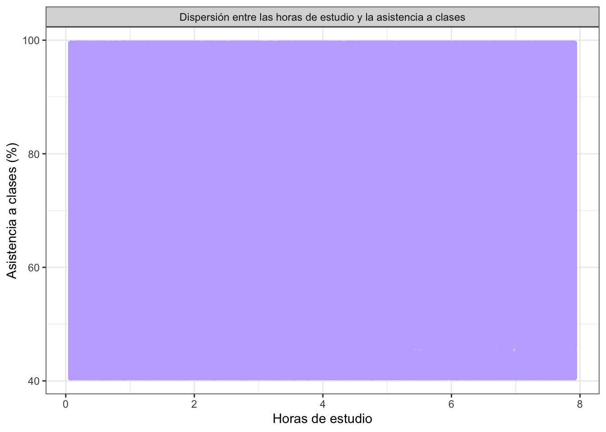
Los puntos cubren todo el rango de ambas variables: no se ve relación entre las horas de estudio y la asistencia.
study_hours vs sleep_hours
trainset %>%
ggplot(aes(x = study_hours, y = sleep_hours)) +
geom_point(alpha = 0.4, color = "#c5b0ff") +
labs(x = "Horas de estudio", y = "Horas de sueño") +
theme_bw() +
facet_grid(. ~ "Dispersión entre las horas de estudio y las horas de sueño")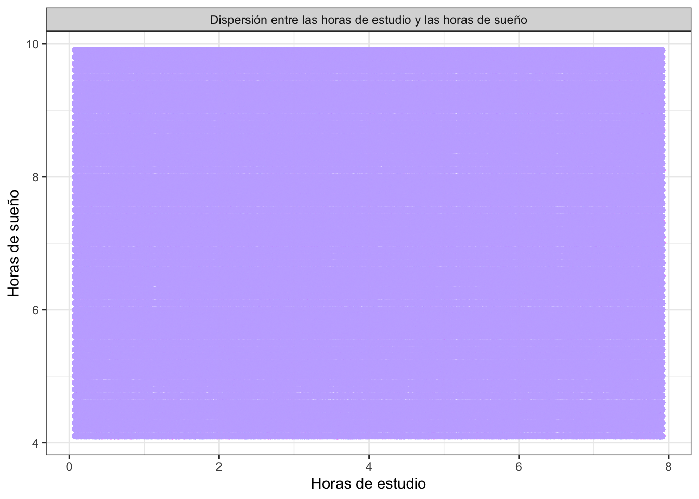
La nube de puntos es homogénea: estudiar más o menos horas no se asocia con dormir más o menos.
class_attendance vs sleep_hours
trainset %>%
ggplot(aes(x = class_attendance, y = sleep_hours)) +
geom_point(alpha = 0.4, color = "#c5b0ff") +
labs(x = "Asistencia a clases (%)", y = "Horas de sueño") +
theme_bw() +
facet_grid(. ~ "Dispersión entre la asistencia a clases y las horas de sueño")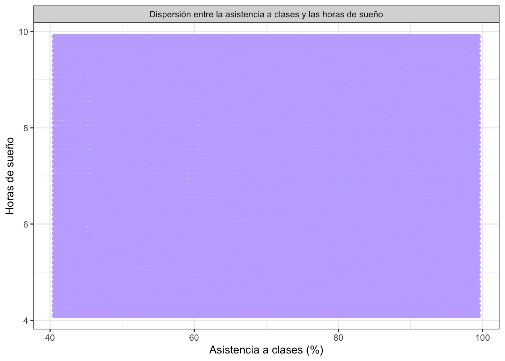
Tampoco hay relación entre la asistencia a clases y las horas de sueño: la nube de puntos es homogénea.
Las variables numéricas independientes prácticamente no se relacionan entre sí, así que cada una aporta información distinta sobre exam_score.